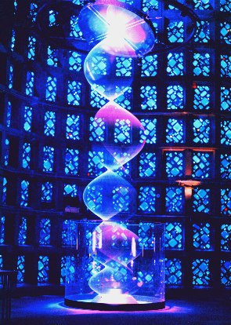
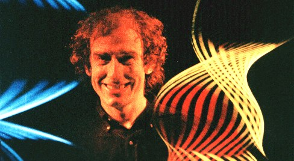

 ASTRONOMERS say 90 per cent of the matter in our Universe is invisible. But if we could see this elusive dark matter, what would it look like? British artist Paul Friedlander thinks he knows.
He has created an 8-metre high pulsating column of vivid multicoloured light. The piece, called Dark Matter, takes centre stage at Lghtforms '98, an international exhibition of interactive light art, beginning next Thursday at the New York Hail of Science.
Dark Matter is Friedlander's latest experiment with a kind of art known as light sculpture - the creation of attractive forms by manipulating light and colour.
The sculpture uses a special technique called chromastrobic light, developed by Friedlander in 1983, which changes colour faster than your eye can see. The eye detects changes by taking 50 snapshots every second, which the brain strings together into a smooth sequence. Because chromastrobic light changes colour in less than the time between these snapshots, the colour changes are blurrcd together, making the light appear white. But shining the light on to a rapidly moving object splits it into its constituent colours.
The Dark Matter sculpture works by shining chromastrobic light on a rapidly vibrating vertical rope, spanning the height of the exhibit. Under white light, the rope appears as a white blur. But under a chromastrobe the colour of the light changes as the rope moves, and the blur becomes a multi-coloured trail.
Spectators can interact with Dark Matter, using two highfrequency Soundbeams to alter the speed of the rope's vibrations and the colour of the light. By placing some part of the body through the beams, they cause disturbances that are fed back into the motor driving the rope and into the chromastrobe illuminating the sculpture. The position of the sound beams are pinpointed by light beams positioned parallel to them from two giant spotlights, one called Big Eye - borrowed from Pink Floyd.
The rope also reacts audibly to the input of the sound beams. "A light sculpture on this scale becomes a powerful aeolian harp," says Friedlander, "producing an eerie sound which rises and falls with the varying rope speed." Science figures prominently in his work, not just as an artistic medium, but also as inspiration. The idea for Dark Matter came from the possibility that our Universe is criss crossed with invisible concentrations of energy called cosmic strings. "Scientific theories may not resemble artworks but they are creations of the human mind and are the subject of strong feelings within the scientific commumty" he says.
Hooked on light art during the psychedelic 1960s, Friedlander built his first light sculptures while a physics student at the University of Sussex. Graduating in 1972, he studied fine art for a year before starting a career designing stage lighting for musical events. Now, he works full-time as a light artist.
His work isn't confined to galleries, though. British Telecom went to him in 1993 when it wanted a light sculpture for the foyer of its head office in London, incorporating the then new medium in telecommunication - fibre optics. A computer-controlled light sculpture was commissioned in 1995 by Technorama, a science museum in Switzerland. And a small light sculpture called String Ray, based on Friedlander's designs, was launched in America in 1991, selling 30,000 copies.
"In a time when so many artists resort to bizarre and shocking gimmicks to achieve originality I take solace in the work of Paul Friedlander and others like him," says Jim Miller, of American Artists' group EyeCandy ArtWork' "They prove that beauty still has a place in modern art." 
Long trip: Friedlander's adventures in light were first inspired by psychedelia